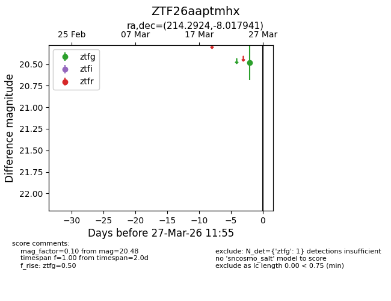
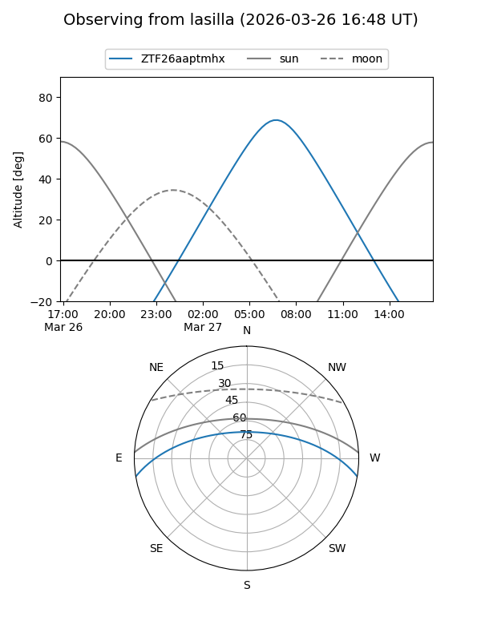
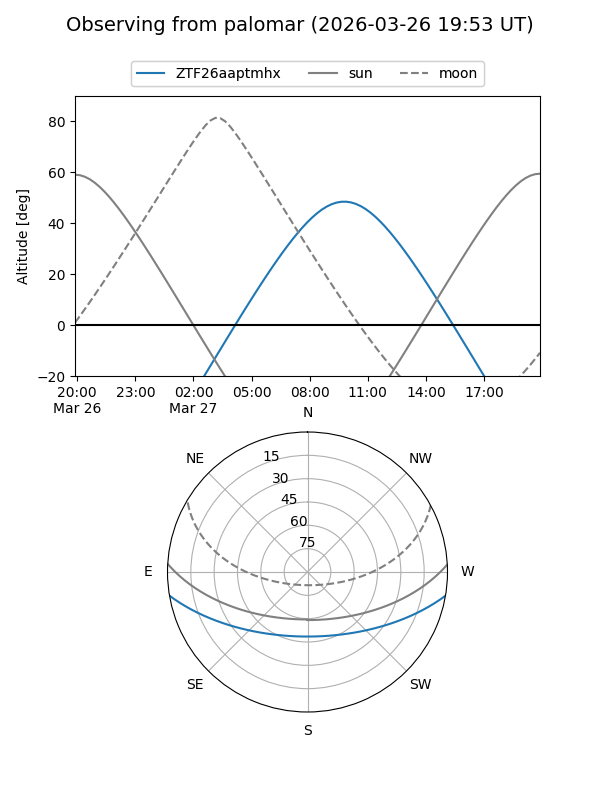

ZTF26aaptmhx
Target ZTF26aaptmhx at 2026-03-27 11:58
Aliases and brokers:
FINK: link
Lasair: link
ALeRCE: link
alt names
ZTF26aaptmhx (ztf,fink_ztf)
Coordinates:
equatorial (ra, dec) = 214.2924,-8.01794
equatorial (HMS+DMS) = 14:17:10.19,-08:01:04.59
galactic (l, b) = (336.5403,+49.17773)
Flags:
Photometry:
last ztfg=20.48
1 ztfg detections
Lightcurve

Visibility


Additional plots